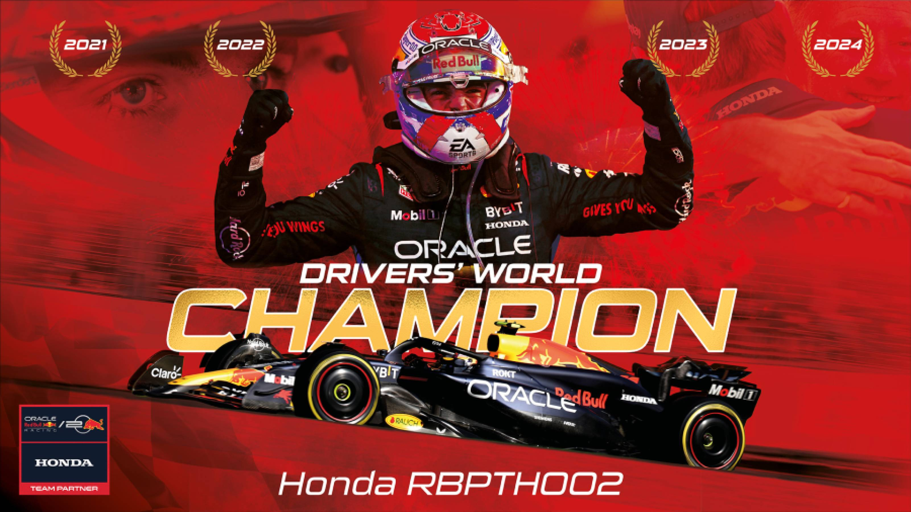

Max Verstappen is FOUR Times World Champion.
Max Verstappen officially celebrated his fourth Formula 1 world championship title at the 2024 FIA Awards Ceremony. The FIA's celebration of its world champions took place this year in Rwanda's capital Kigali.